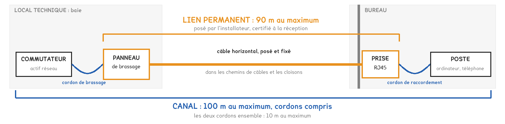
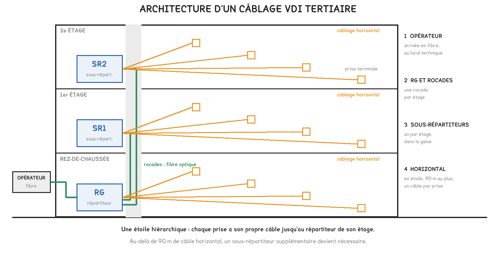
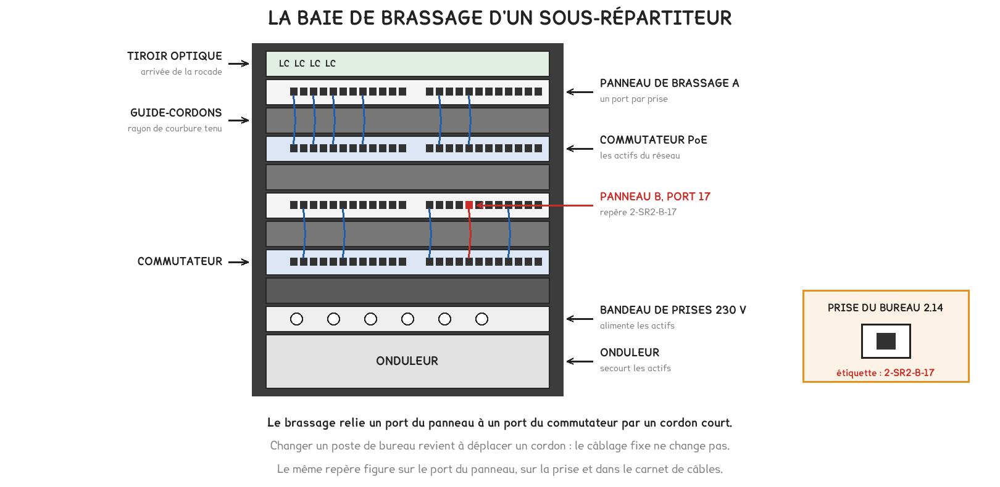
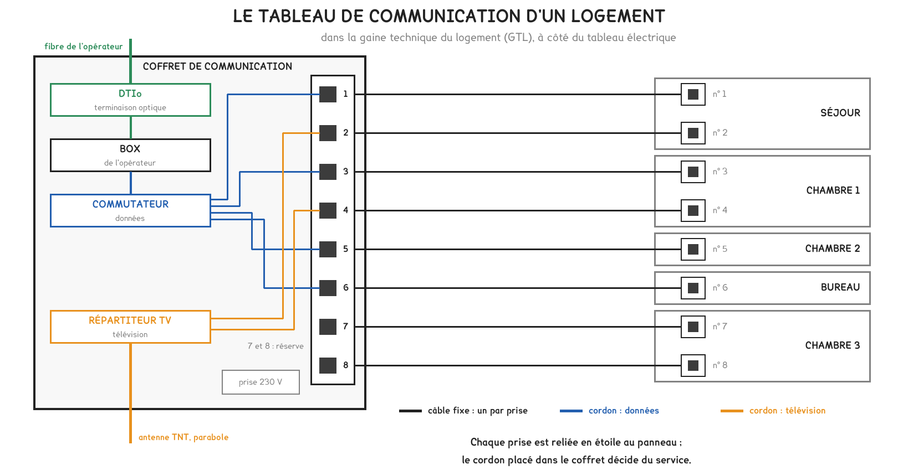
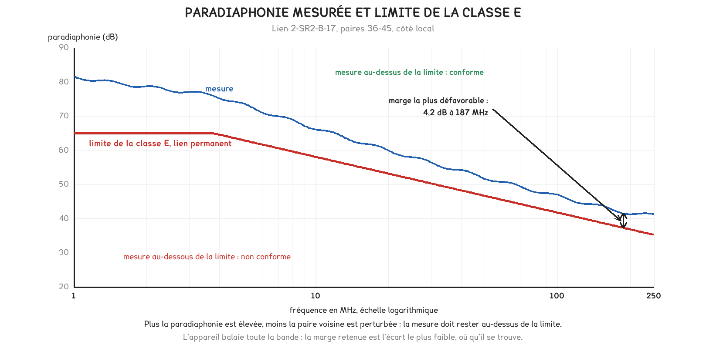

BTS FED option C · 1re année
Du câbleau procès-verbal
Un câble de catégorie 6 ne fait pas à lui seul un lien de classe E. La séance a suivi le câblage d'un immeuble, de l'arrivée de l'opérateur jusqu'à la prise du bureau, puis appris à lire le document qui prouve qu'il fonctionne.
2 outils · 6 questions · 4 exercices · 4 replis · 7 figures
Savoirs travaillés
Objectifs de la séance
Le cahier des charges d’un immeuble de bureaux exigeait « un câblage de classe E, certifié en lien permanent ». L’entreprise, elle, n’achète que des composants de catégorie 6. La séance a montré ce qui sépare les deux, puis comment le prouver.

Catégorie et classe
La catégorie qualifie un composant : câble, prise, panneau, cordon. La classe qualifie un lien installé, de bout en bout. Un lien ne dépasse jamais la classe de son composant le plus faible, et seule la certification établit sa classe.
| Catégorie | Classe | Fréquence maximale |
|---|---|---|
| 5e | D | 100 MHz |
| 6 | E | 250 MHz |
| 6A | EA | 500 MHz |
| 7A | FA | 1 000 MHz |
Des composants de la bonne catégorie ne suffisent pas. Un détorsadage trop long au raccordement, un rayon de courbure trop serré ou un collier qui écrase le câble font perdre la classe à un lien dont tous les composants sont conformes.
Lien permanent et canal
90 m · 100 m · 10 m
- lien permanent: du panneau de brassage à la prise terminale, 90 m au plus
- canal: le lien permanent et les deux cordons, 100 m au plus
- cordons: 10 m au plus, les deux ensemble
La réception porte sur le lien permanent : c’est l’ouvrage de l’installateur, et il reste en place toute la vie du bâtiment.
Pour aller plus loin
Pourquoi le lien fixe s'arrête à 90 mPour aller plus loin›
La limite de 90 m réserve 10 m aux cordons, que l’exploitant choisira plus tard et que l’installateur ne connaît pas. Chaque mètre de lien fixe au-delà de 90 m serait pris sur la longueur des cordons.
Il existe une seconde raison. Un cordon est souple, et il affaiblit davantage le signal par mètre qu’un câble rigide. La limite du canal a été calculée pour 90 m de câble et 10 m de cordons : c’est ce partage qui la rend tenable.
Une étoile hiérarchique

L’opérateur arrive au répartiteur général. Des rocades, le plus souvent en fibre, montent vers un sous-répartiteur par étage. De là, chaque prise reçoit son propre câble, en étoile, sur 90 m au plus.

Chaque lien porte un repère unique, identique à ses deux extrémités : sur la prise du bureau, sur le port du panneau et dans le carnet de câbles. C’est ce repère qui identifie le lien dans le procès-verbal.
Pour aller plus loin
Dans le logement : le tableau de communication et les gradesPour aller plus loin›
Le logement a son propre répartiteur : le tableau de communication, installé dans la gaine technique du logement, à côté du tableau électrique. Chaque prise RJ45 y est reliée en étoile, et le cordon placé dans le coffret décide du service.

Le grade indique ce que le câblage distribue. Les valeurs ci-dessous sont des ordres de grandeur.
| Grade | Services sur les prises RJ45 |
|---|---|
| 1 | téléphone et données |
| 2TV | téléphone, données, télévision terrestre |
| 3TV | téléphone, très haut débit, télévision terrestre et satellite |
Lire un procès-verbal de certification

Un procès-verbal se lit comme le résultat de tout essai : une grandeur mesurée, une limite, une marge, un verdict. Il faut d’abord relever la limite de test appliquée, puis chercher la marge la plus faible.
Marge = écart à la limite, positif si conforme
- grandeur plafonnée(longueur, perte d’insertion) : marge = limite − mesure
- grandeur minimale(paradiaphonie, affaiblissement de réflexion) : marge = mesure − limite
- longueur d’un lien: NVP × 0,3 m/ns × délai de propagation
Le verdict d’un lien est celui de sa marge la plus défavorable.
Une paradiaphonie élevée est favorable. La valeur mesure l’affaiblissement du signal parasite qui passe d’une paire à sa voisine : plus elle est grande, mieux la paire voisine est protégée.

L’appareil balaie toute la bande de fréquences, parce qu’un défaut peut creuser la mesure à n’importe quelle fréquence. La marge retenue est l’écart le plus faible, où qu’il se trouve.
Pour aller plus loin
Un défaut d'un seul côté se cherche de ce côtéPour aller plus loin›
L’appareil mesure la paradiaphonie depuis les deux extrémités du lien. Si la mesure n’échoue que d’un côté, le défaut se trouve près de cette extrémité : le plus souvent un raccordement où les paires ont été trop détorsadées.
La longueur et la perte d’insertion aident à trancher. Si elles sont correctes, le câble lui-même n’est pas en cause, et c’est le raccordement qu’il faut reprendre avant une nouvelle certification.
La norme et le contrat ne disent pas toujours la même chosePour aller plus loin›
Une marge positive satisfait la norme. Un cahier des charges peut exiger davantage, par exemple une marge d’au moins 2 dB. Un lien peut donc être « réussi » pour l’appareil et refusé par le client.
Une marge très faible pose aussi une question de précision : elle peut être du même ordre que l’incertitude de l’appareil. Certains appareils l’affichent alors avec un astérisque.
Pourquoi cette séance compte
Une certification de câblage a exactement la forme d’un essai : une mesure, une norme de référence, un verdict et un rapport. Savoir lire et commenter un procès-verbal, c’est déjà savoir rédiger la conclusion attendue en situation de CCF.
Essayer
Vérifier que c’est acquis
- La classe qualifie : un lien installé | un câble | une prise
- Le lien permanent mesure au plus : 90 m | 100 m | 110 m
- Un câble de catégorie 5e raccordé sur un panneau de catégorie 6 donne au mieux un lien de classe : D | E | EA
- Pour la paradiaphonie, la marge vaut : mesure moins limite | limite moins mesure
- Le verdict d’un lien est celui de : sa marge la plus défavorable | sa marge moyenne | sa mesure à 250 MHz
- Les rocades d’un immeuble sont le plus souvent en : fibre optique | câble coaxial | paire torsadée non blindée
S’entraîner
Exercice · D2-2
La longueur d’après le délai
Un appareil de certification mesure un délai de propagation de 340 ns sur un lien. La NVP du câble vaut 70 %.
Quelle est la longueur du lien ?
Exercice · D2-2
Une marge de paradiaphonie
Sur un lien de classe E, la paradiaphonie la plus défavorable vaut 39,6 dB à 205 MHz. La limite à cette fréquence vaut 36,2 dB.
Quelle est la marge ?
Exercice · D2-2
Où chercher le défaut ?
Un lien échoue en paradiaphonie mesurée côté distant seulement. Sa longueur et sa perte d’insertion sont correctes. Le côté distant est celui du bureau.
Quel élément faut-il reprendre en premier ?
Exercice · D2-2
Réussi, et pourtant refusé
Un lien affiche « réussi » avec une marge de 0,6 dB en affaiblissement de réflexion. Le client le refuse. Expliquer à l’installateur pourquoi ce refus peut être fondé, en trois ou quatre lignes.
- J’ai distingué le verdict de la norme et l’exigence du cahier des charges
- J’ai indiqué qu’un cahier des charges peut imposer une marge minimale
- J’ai évoqué la précision de l’appareil face à une marge aussi faible
- J’ai proposé de reprendre le lien puis de le certifier de nouveau
À retenir pour la prochaine séance
La séance suivante fait passer la voix et l’image sur cette infrastructure : des téléphones alimentés par le câble, un appel dont le débit se calcule, une vidéo distribuée dans le bâtiment. Elle suppose acquis le lien permanent, la baie de brassage et le repérage.
Cette page rappelle la séance. Elle ne remplace pas le polycopié et ne donne aucun corrigé. Tous les calculs se font dans votre navigateur ; rien n'est enregistré.